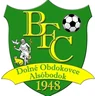
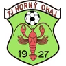
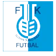

Posledný zápasU9 · III. liga prípraviek U9, 5. turnaj
Rišňovce U9 (domáci)
–
 FK Janíkovce (hostia)
FK Janíkovce (hostia)Návrh webu · nie je to oficiálna stránka klubu
III. liga prípraviek U9 · 22. miesto z 35 · vedúci Alexander Mihočka
Posledný zápasU9 · III. liga prípraviek U9, 5. turnaj
–
FK Janíkovce (hostia)5–0–12výhry, remízy, prehry · skóre 38:38
Ďalšie zápasy zatiaľ nie sú vyžrebované.
III. liga prípraviek U9
| # | Tím | Z | V | R | P | Skóre | B |
|---|---|---|---|---|---|---|---|
| 1 | 18 | 15 | 0 | 3 | 75:14 | 45 | |
| 2 | 15 | 14 | 0 | 1 | 87:14 | 42 | |
| 3 | 14 | 13 | 1 | 0 | 115:5 | 40 | |
| 4 | 19 | 12 | 3 | 4 | 87:20 | 39 | |
| 5 | 14 | 13 | 0 | 1 | 67:15 | 39 | |
| 6 | 14 | 12 | 1 | 1 | 67:12 | 37 | |
| 7 | 19 | 12 | 0 | 7 | 62:40 | 36 | |
| 8 | 14 | 11 | 2 | 1 | 59:14 | 35 | |
| 9 | FC Jelenec | 14 | 11 | 2 | 1 | 57:19 | 35 |
| 10 | 17 | 11 | 1 | 5 | 84:41 | 34 | |
| 11 | 13 | 10 | 1 | 2 | 64:21 | 31 | |
| 12 | 16 | 10 | 0 | 6 | 38:52 | 30 | |
| 13 | 18 | 10 | 0 | 8 | 55:32 | 30 | |
| 14 | 15 | 10 | 0 | 5 | 43:29 | 30 | |
| 15 | 19 | 9 | 1 | 9 | 60:52 | 28 | |
| 16 | 18 | 8 | 2 | 8 | 37:40 | 26 | |
| 17 | FC Čechynce | 11 | 8 | 1 | 2 | 40:10 | 25 |
| 18 | FC Cabaj-Čápor | 13 | 7 | 3 | 3 | 33:16 | 24 |
| 19 | 14 | 7 | 1 | 6 | 29:33 | 22 | |
| 20 | 18 | 7 | 0 | 11 | 44:61 | 21 | |
| 21 | 19 | 6 | 3 | 10 | 29:49 | 21 | |
| 22 | TJ Družstevník Rišňovce | 18 | 6 | 0 | 12 | 41:38 | 18 |
| 23 | 17 | 5 | 0 | 12 | 28:50 | 15 | |
| 24 |  BFC – OÚ Dolné Obdokovce | 14 | 4 | 0 | 10 | 18:39 | 12 |
| 25 | 14 | 3 | 2 | 9 | 21:37 | 11 | |
| 26 |  TJ Družstevník Vráble – Horný Ohaj | 13 | 3 | 1 | 9 | 11:42 | 10 |
| 27 |  FK Slovan Duslo Šaľa B | 14 | 3 | 1 | 10 | 26:77 | 10 |
| 28 | 14 | 1 | 2 | 11 | 5:76 | 5 | |
| 29 | 11 | 1 | 1 | 9 | 14:58 | 4 | |
| 30 | OFK Hosťová | 14 | 1 | 1 | 12 | 9:55 | 4 |
| 31 | 11 | 1 | 0 | 10 | 5:87 | 3 | |
| 32 | 11 | 0 | 1 | 10 | 6:65 | 1 | |
| 33 | 15 | 0 | 1 | 14 | 13:109 | 1 | |
| 34 | Futbalový klub FK Babindol | 8 | 0 | 0 | 8 | 0:24 | 0 |
| 35 | FC Neded | 14 | 0 | 0 | 14 | 3:86 | 0 |
Hráči, ktorí v roku 2026 nastúpili alebo boli v nominácii (Sportnet). Pri mládeži len mená.